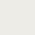
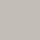

Farba Hydro Bariera 3v3 to doskonałe rozwiązanie dla pomieszczeń narażonych dużą wilgoć (kuchnia łazienka). Jest alternatywą dla płytek ceramicznych. Wysoce odporna na wodę (bezpośrednie działanie wody z prysznica). Odpowiednia na powierzchnie nowe i wcześniej malowane. Odporna na produkty pielęgnacyjne np. szampony, żele pod prysznic, środki czyszczące. Nie należy stosować na powierzchnie poziome.
Faba wodoodporna do wnętrz Easy Hydrobariera

Farba izolująca od bezpośredniego wpływu wody do kuchni i łazienki.
CENY:
0,75l / 50 zł
2l / 100 zł
Kolory

Biały

Kość słoniowa

Beż
Szary taupe

Kryształ górski
Arktyczna mgła
Magma wulkaniczna
Amarant
Właściwości i przeznaczenie
Wykończenie: SATYNA
Czas między warstwami: 12H
Wydajność: 12M2
Pojemność: 0,75L, 2L
Czyszczenie narzedzi: WODA
Zastosowanie
Przygotowanie podłoża
Powierzchnię podłoża należy odtłuścić (acetonem lub zasadowym środkiem na bazie sody):
-
powierzchnie porowate (np. płyty gipsowo-kartonowe, tynki):
odkurzyć i zastosować podkład gruntujący, zmniejszający chłonność podłoża -
powierzchnie stare, wcześniej malowane (ściany, powierzchnie drewniane):
odtłuścić, umyć i spłukać dokładnie czystą wodą, pozostawić do wyschnięcia na 24 godziny, a następnie przeszlifować papierem ściernym i odkurzyć -
powierzchnie nieporowate (płytki ścienne, listwy, luksfery):
umyć, odtłuścić, spłukać, pozostawić do wyschnięcia. Do mycia powierzchni stosować środki o odczynie alkaicznym
Porady
Pełne właściwości i odporność powłoka uzyskuje po 20 dniach, do tego czasu należy chronić powierzchnię przed uszkodzeniem.
Aplikacja
- W saszetce przyklejonej do wnętrza pokrywy znajduje się dodatkowy składnik produktu. Przed aplikacją należy otworzyć saszetkę i wlać całą jej zawartość do pojemnika z farba. (Farbę zmieszaną z dodatkiem należy wykorzystać w przeciągu 10 dni).
- Farbę należy dokładnie wymieszać za pomocą mieszadła do farb sięgając aż do dna pojemnika przez kilka minut, w celu uzyskania jednorodnej konsystencji.
- Nasączyć wałek równomiernie farbą i usunąć jej nadmiar na kratce malarskiej. Nanosić starannie, metodą krzyżową, taką samą ilość farby na podobną powierzchnię. Ostatnie pociągnięcie wałkiem wykonywać w jednym kierunku (np. z góry na dół).
- Aby otrzymać pełne właściwości i odporność produktu, należy nałożyć dwie warstwy.